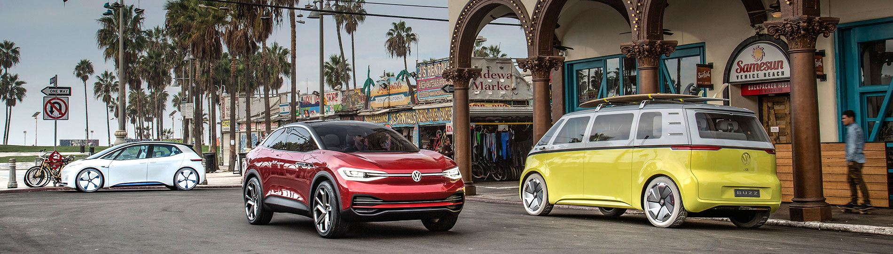
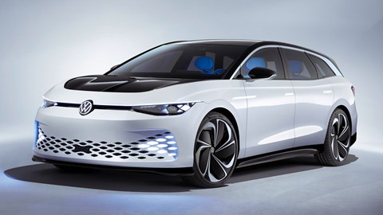

Відмова від двигунів внутрішнього згорання з 2035 року: у Volkswagen назвали основну складність.

У Volkswagen вважають, що завдання відмовитися від двигунів внутрішнього згоряння до 2035 року є цілком
реальним.
Але в автовиробників можуть виникнути проблеми з випуском достатньої кількості батарей для електромобілів.
Про це сказав фінансовий директор Volkswagen Арно Антліц, повідомляє Reuters.
29 червня міністри Євросоюзу домовились, що з 2035 року в межах боротьби з глобальним потеплінням усі нові
автомобілі мають бути кліматично нейтральними. Це означатиме заборону на продаж авто з бензиновими та дизельними
двигунами.
«Це складна мета. [Але] ми думаємо, що її можна виконати. Найскладніше не збільшення автовиробництва,
найскладніше – збільшити ланцюг постачання батарей», – вважає Антліц.
Volkswagen заявив, що зможе припинити продаж автомобілів з двигунами внутрішнього згоряння в ЄС до встановленої
дати, але у виробників, які відстають у розробці електрокарів, таких як Toyota, можуть виникнути проблеми.

Серйозною проблемою для автовиробників може стати пошук достатньої кількості сировини. Проблеми з запасами
літію, нікелю, марганцю чи кобальту — будь-який дефіцит здатен вплинути на ціну машин і поставити під загрозу
прибуток автовиробників.
Гендиректор корпорації Stellantis (Fiat, Chrysler, Peugeot) Карлос Таварес недавно заявив, що дефіцит батарей
може вдарити по світовому автопрому вже у 2024–2025 роках. Він прокоментував рішення Ради ЄС так: «Це для нас не
хороша новина і не погана новина. Це саме те припущення, яке є у нас у планах».
Stellantis планує вже з 2030 року продавати тільки електромобілі.